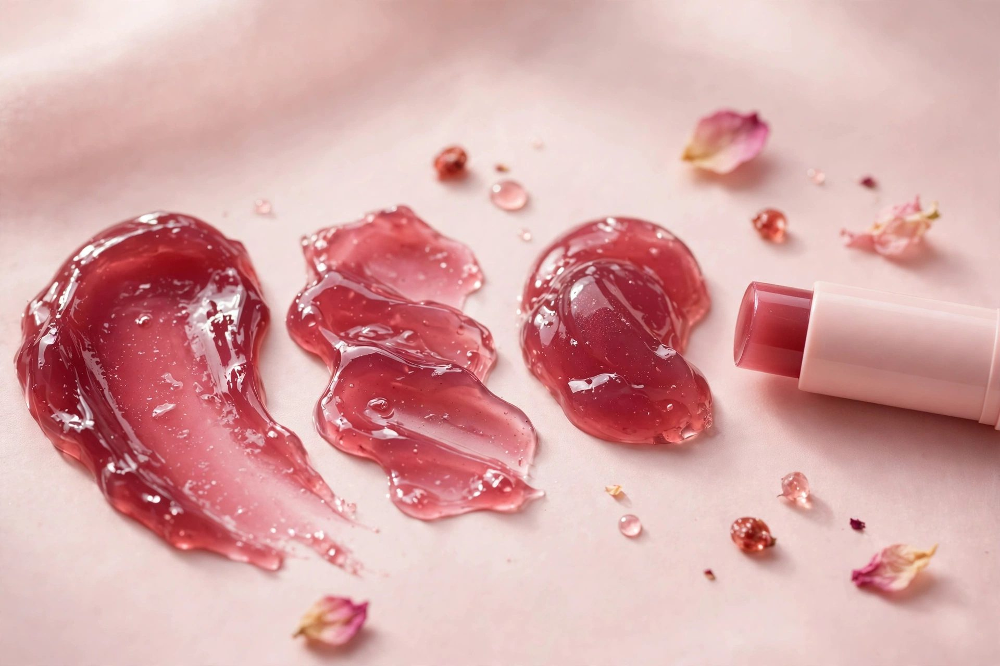

Milk Makeup Cooling Water Jelly Tint — Splash (Berry)

This is the jelly blush behind our jelly beauty pins: a bouncy, cooling gel stick that works as both blush and lip stain. It is powered by vegan collagen, seawater and aloe, so it hydrates while it tints — and the sheer colour builds from a light wash to a vivid berry in a few swipes. One stick lasts for more than 1,000 applications.
Why this shade
Splash is a berry tone — the most-loved shade of the range, and the easiest one to wear: it reads as a natural flush on cheeks and a bitten-lip tint on lips, on most skin tones.
How to apply it
- Cheeks: swipe once across each cheekbone, then tap and blend with your fingertips. Add a second swipe for more colour.
- Lips: swipe straight from the stick for a sheer berry stain. Layer it for a deeper tint.
- Tip: apply it before powder products — the jelly texture grips best on bare or freshly moisturised skin.
Pairs with the vanilla stack: a glossy berry cheek plus a vanilla scent stack is the full look — sweet scent, juicy colour. See the vanilla side of the routine on our Lattafa Yara page.

As an Amazon Associate I earn from qualifying purchases.